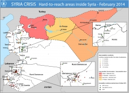

Syria: “Civilians are under fire”
Almost three years into Syria’s civil war, civilians are still being targeted by all sides, and aid efforts continue to be prevented and undermined. This was the assessment delivered today by UN Deputy Humanitarian Chief, Ms. Kyung-wha Kang in a statement to the UN General Assembly.
“Civilians are under fire and the social fabric [of Syria] has been torn to shreds, with reports of horrific human rights violations including sexual and gender-based violence,” Ms. Kang said.
A failure to protect civilians
Ms. Kang’s statement comes just days after the UN Security Council passed a resolution calling for improved humanitarian access in the war-torn country. Ms. Kang said that there has been a near complete failure of all parties to the conflict to protect civilians.
“It is unacceptable that international humanitarian and human rights law continue to be flagrantly violated by all parties to the conflict,” she said.
She highlighted the 18 February incident where at least 18 people – including five Palestinian refugee school children and one aid worker with the UN Relief and Works Agency (UNRWA) – were killed when an explosive struck near a school in Muzeirib in southern Syria.
Aid groups committed to staying and delivering
More than fifty aid workers – including 34 from the Syrian Arab Red Crescent and 15 from the UN. Despite the insecurity and the arbitrary constraints that have been placed on aid operations – UN agencies and other humanitarian groups continue to reach people affected by the crisis.
The World Food Programme (WFP), for example, is now reaching almost 4 million people each month. Half of these are living in opposition-held or contested areas. The UN Children’s Fund (UNICEF) and partners provided about 10 million Syrians with clean drinking water in 2013, and distributed school supplies to 1.5 million children across the country.
Aid groups are also persevering with ‘cross-line’ missions. Since the beginning of 2013, 58 cross-line convoys have delivered assistance to millions of people in hard-to-reach areas. But many of these have carried assistance for only a few thousand people at a time and only once, noted Ms. Kang, and the approach is insufficient when compared with the enormous needs of people living in areas cut off by the conflict.
3.3 million people in hard-to-reach areas
“Despite our best efforts to scale-up the response, there are 3.3 million people in urgent need of assistance in hard-to-reach areas that we cannot reach systematically,” said Ms. Kang.
She spoke of the scenes witnessed by staff from OCHA and other humanitarian organizations when they reached the besieged Old City of Homs earlier this month. Aid groups were able to evacuate 2,500 people who had been trapped there since 2012, as well as bringing in some basic relief supplies.
“Our colleagues reported the destruction of the Old City with not a single building left unscathed. The hospital has extremely limited medical supplies and staff and no equipment.“It was described as a place to die, not a place to be saved.”
An unacceptable status quo
Ms. Kang reiterated the UN Security Council’s unanimous call for a resolution to the crisis in Syria. “We are in a race against time,” she said. “The status quo is wholly unacceptable and aid must reach those in need … More people are slipping out of our reach as the conflict intensifies … We desperately need a political solution to the conflict.”
The Deputy Humanitarian Chief then called on the Security Council to ensure the implementation of their weekend resolution.
“It is our hope – the hope of all humanitarians – that the Council will maintain its unity in ensuring its prompt implementation.”

{kind=link}